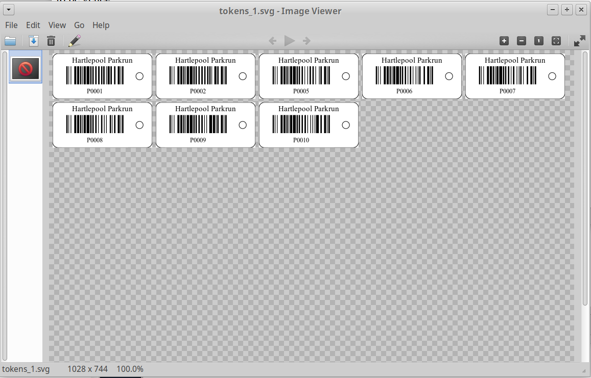

This Token Generator Tool allows users to generate replacement Parkrun finish tokens and (in the future will) allow custom runner barcodes to be generated. Details of what it does and how it works are in the About section below.
If there are any issues please email graham@openseizuredetector.org.uk.
Not done yet..... The idea is to allow users to generate barcodes of different sizes with various borders etc. I'll need someone artistic to help with this though!
This tool was developed because at Hartlepool Parkrun we were having issues with 'losing' finishing tokens from our nice set of the new (2019) style finish tokens. We were replacing them with tokens from our old set which were a different shape...and the reason we scrapped the old set was that they were worn and difficult to scan. The barcode stickers that we had were only good for a couple of uses then started to wear off and become just as difficult to scan. Rather than go to the waste of buying a whole new set of tokens for a few replacements, I decided to make our own temporary replacements that would be compatible with the 'Virtual Volunteer' scanning app.
I thought that other parkruns might be in a similar position so might find it useful, so turned it into a web based application
The Finish Token Generator Tool takes a user-specified list of finish positions for which tokens are to be generated and the name of the parkrun they are for. It then generates one or more Scalable Vector Graphics SVG) files that represent A4 pages to be printed to make the tokens. These are downloaded in a zip file onto the user's computer. The user opens the file and prints out each page in turn.
The user can then laminate the printed pages and cut out the tokens. The size is similar to the Parkrun tokens so they can be stacked along with the real tokens. An example of the finished tokens is shown above.
Note: The generated page is designed to be printed in landscape format - if you print it in portrait mode it may be scaled to fit on the page, resuting in undersized tokens.
The tool is completely free and Open Source (GPL v3 Licence). The source code is available on GitHub in my parkrun_tokens repository for anyone to use or modify. It is written in Python so quite easy to see what it is doing.
The heart of the system is the open source python-barcode library which is used to generate the barcode part of the token as SVG graphics. The finish_tokens.py script accepts a list of position numbers and a parkrun name and generates a single SVG image of the finish token for each finish position. If the user requests more tokens than will fit on an A4 page, it generates multiple pages as separate SVG files. finish_tokens.py can be run as a simple command line application.
I am conscious that many people are not used to using command line utilities, so I thought I should provide a graphical interface. To save the trouble of trying to work out how to install it on Windows and Macintosh computers, I made it a web application. The web application is in the main.py script, which uses the Flask python web framework.
A couple of people have tried to persuade me that using Docker containers is a good way of distributing web applications, so I have tried that. Typing 'make build' will build a docker image for the app, then 'make start' will run it. The web page should be visible at http://localhost:56733. I have it running on a virtual server at https://barcodes.ddns.net where the nginx web server redirects to the port 56733 so the end user does not need to know about that.
I am happy to receive any suggestions or improvements to the code. Please either drop me an email to graham@openseizuredetector.org.uk or raise an issue or pull request on the github repository.